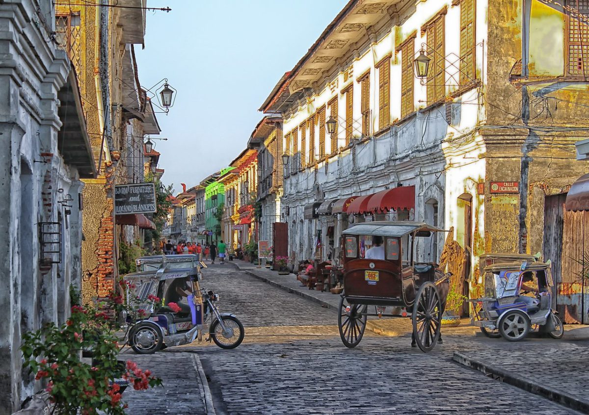
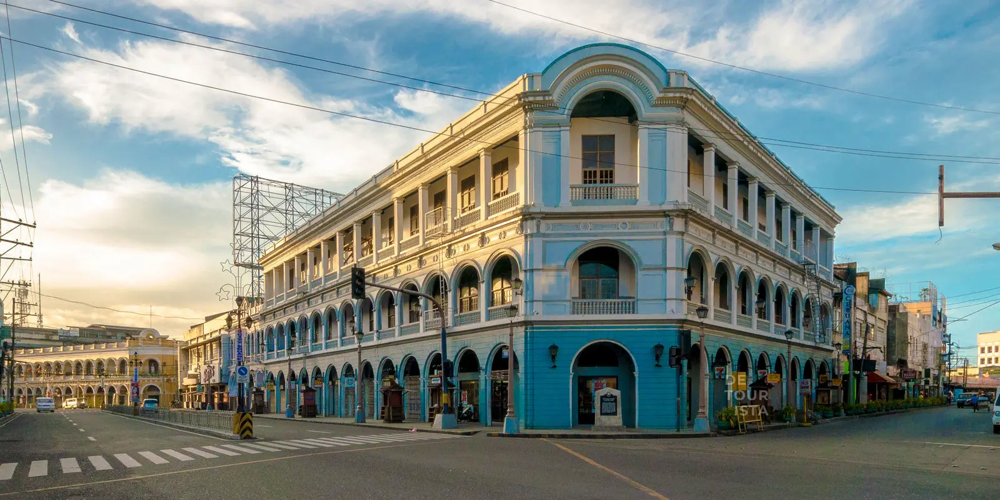
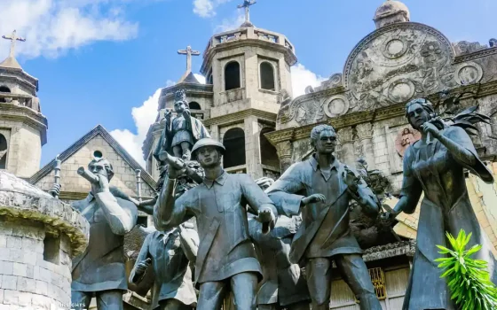

Philippine Architecture
Heritage towns are found much throughout the Philipines. But how is that so? Due to the Spanish, Japanese, and American colonialization as well as Chinese and European influences, our overall culture can be seen as the meltingpot of cultural diversity, some of which can be seen through our architecture.
| Photos | Location | Description |
|---|---|---|
|  | Vigan, Ilocos Sur |
One of the most notable places when it comes to heritage towns is from the Province of Ilocos Sur. The Vigan Heritage Village showcases the impact from international cultures and is also known as the best-preserved Spanish colonial town in Asia. |
|  | Iloilo City | Iloilo City showcases our rich heritage as it conserves multiple heritage sites. It is also the proud home to some of our country's National Historical Landmarks. |
|  | Cebu City | Known for its many infamous historical attractions, Cebu City holds the title of being our country's oldest city as well as one of our more famous tourist attractions. |

|
City of Manila | Manila, having the most heritage sites in the Philippines, exhibits the impacts of multiple cultures within our country. |